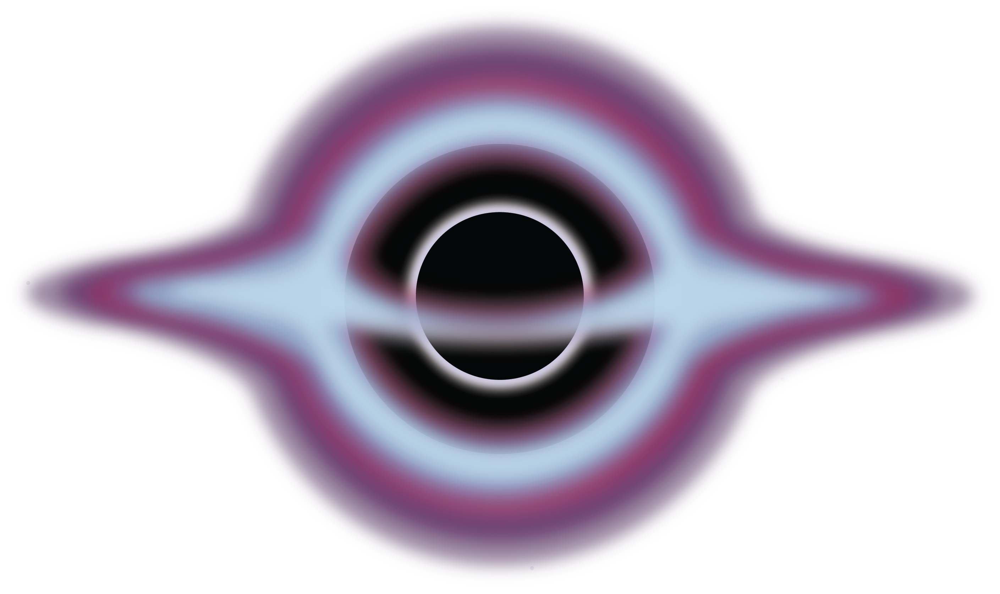
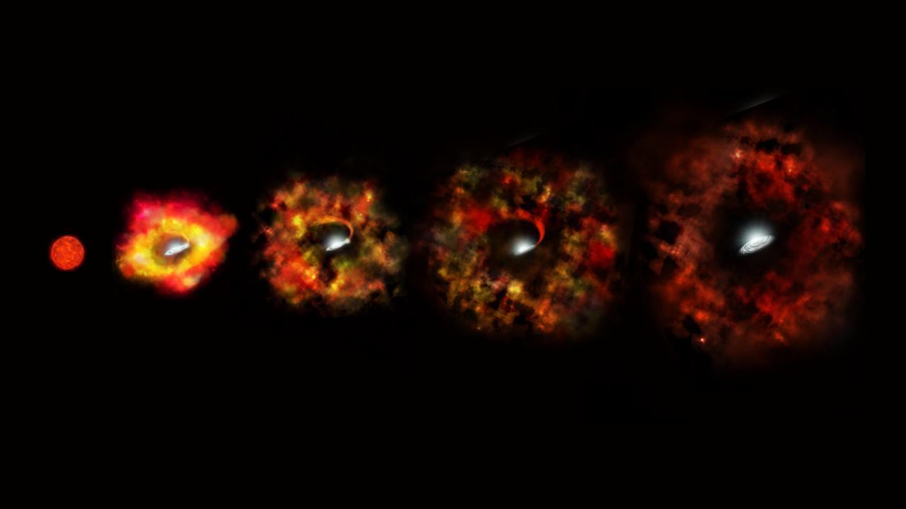
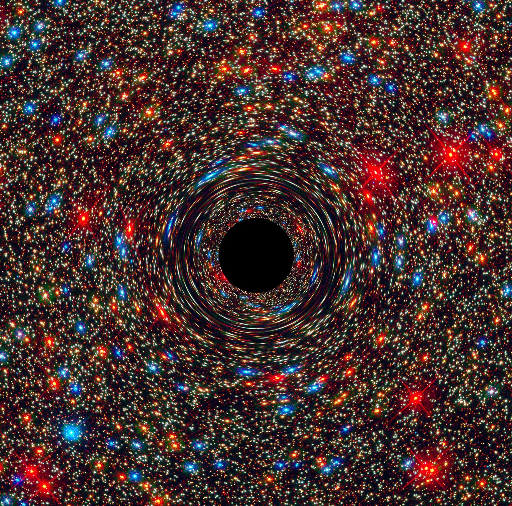

Schwarze Löcher
Einleitung
Schwarze Löcher gehören zu den faszinierendsten Erscheinungen im Universum. Sie besitzen eine extrem starke Gravitation und entstehen unter bestimmten Bedingungen aus sehr massereichen Sternen.
Was ist ein schwarzes Loch?

Quelle:https://science.nasa.gov/resource/black-hole-side-view/
Ein schwarzes Loch ist ein Bereich im Weltall, in dem die Gravitation besonders stark ist. Ab einer bestimmten Grenze kann nichts mehr entkommen. Diese Grenze nennt man Ereignishorizont.
Wie entstehen schwarze Löscher?

Quelle:https://science.nasa.gov/photojournal/massive-star-goes-out-with-a-whimper-instead-of-a-bang-artists-concept/
Einige schwarze Löcher entstehen, wenn sehr große Sterne am Ende ihres Lebens zusammenbrechen. Nachdem der Stern seinen Brennstoff verbraucht hat, kann er seiner eigenen Schwerkraft nicht mehr standhalten. Der Stern kollabiert und es kann ein schwarzes Loch entstehen.
Was ist der Ereignishorizont?
Der Ereignishorizont ist die Grenze um ein schwarzes Loch. Alles, was diese Grenze überschreitet, kann nicht mehr zurückkehren. Auch Licht kann den Ereignishorizont nicht mehr verlassen.
Wusstest du schon?
Schwarze Löcher sind nicht direkt sichtbar.Forschende können sie aber anhand ihrer Auswirkungen auf die Umgebung nachweisen.
Arten im Vergleich

Quelle:https://science.nasa.gov/image-detail/behemoth_blackhole/
Es gibt unterschiedliche Arten von schwarzen Löchern. Manche besitzen nur wenige Sonnenmassen. Andere sind Millionen oder sogar Milliarden Mal schwerer als unsere Sonne. Solche supermassereichen schwarzen Löcher befinden sich häufig im Zentrum großer Galaxien.
Interessante Fakten
- Schwarze Löcher können nicht direkt gesehen werden.
- Wissenschaftler erkennen sie durch ihre Wirkung auf andere Objekte.
- Auch unsere Milchstraße besitzt im Zentrum ein supermassereiches schwarzes Loch.
- Schwarze Löcher können Gas, Staub und Sterne anziehen.
Arten schwarzer Löcher
| Art | Beschreibung |
|---|---|
| Stellare schwarze Löscher | Sie entstehen häufig aus sehr massereichen Sternen. |
| Mittelschwere schwarze Löcher | Ihre Masse liegt zwischen stellaren und supermassereichen schwarzen Löchern. |
| Supermassereiche schwarze Löscher | Sie befinden sich häufig im Zentrum großer Galaxien. |